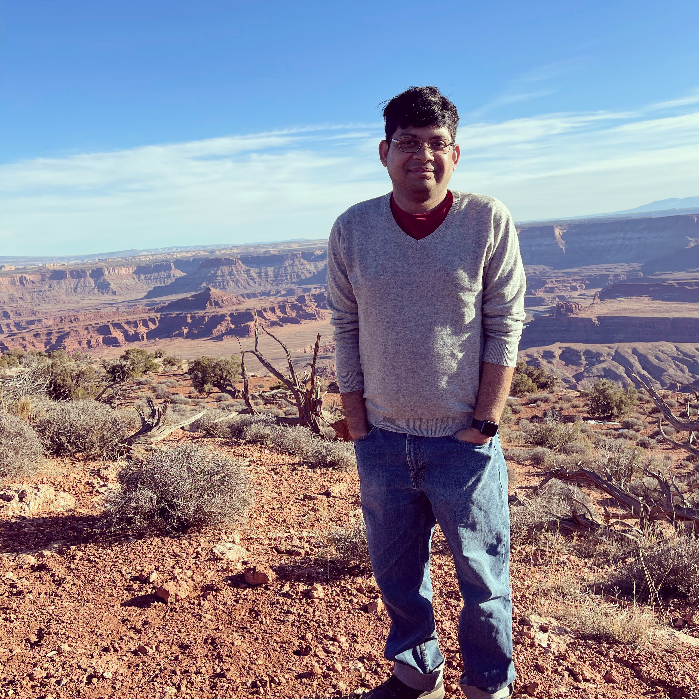
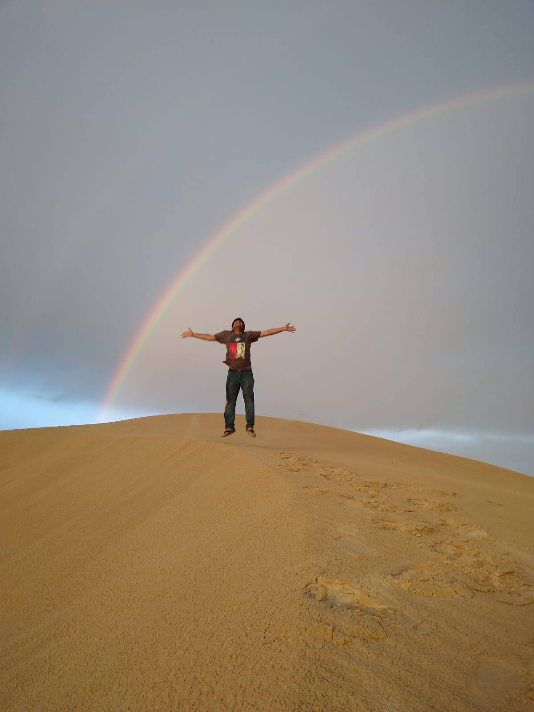
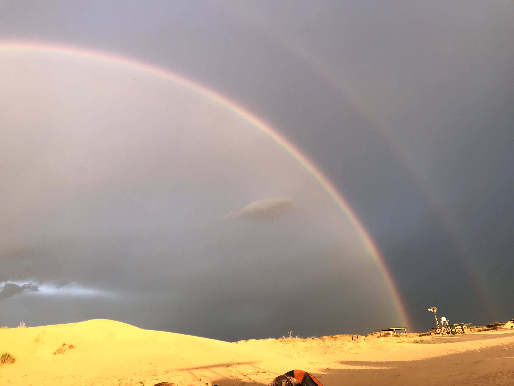

Debajeet Barman is a geophysicist decoding Earth’s interior through AI-powered seismic imaging and ambient noise tomography. With a Ph.D. from Baylor University, I integrate computational models, field deployments, and open-source tools.
My research spans adjoint-free inversion, machine learning, high-performance computing, and distributed acoustic sensing — combining physics with innovation to uncover the unseen.
I believe science should be transparent, collaborative, and visually engaging. From Python to the Permian Basin, I bridge data and discovery.


Ph.D. in Geophysics
Baylor University
Seismic Imaging
Adjoint-Free Inversion
Ambient Noise Tomography
Python, CUDA, MPI
TensorFlow, ObsPy, Fortran
Gulf Coast Surveys
Gravity + DAS Projects
TexNet Collaborations
A mini slide-deck of how I use noise, physics, and AI to image Earth’s interior.
[Email] ▶ debajeet123@gmail.com [AltMail] ▶ Debajeet_Barman1@baylor.edu [LinkedIn] ▶ linkedin.com/in/debajeet-barman [Website] ▶ debajeetbarmanseismology.space